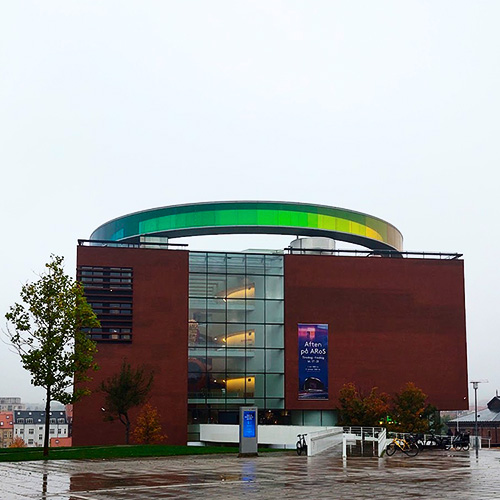

DEBAT
DEBAT
Hvad er Kulturarv?
Kulturarv er et gængs begreb i vores samfund – men mange er uenige om dennes egentlige værdi
NINA LETH MØLLER
 NICE TO KNOW
NICE TO KNOW
Bygningsbevaring
Fem hurtige om bygningsfredning og bevaring af bygninger og bymiljøer i Danmark
NINA LETH MØLLER
 DEBAT
DEBAT
Aarhus Ø - øjnbæ eller arkitektonisk kulturarv?
et nye hus er tegnet af BIG står med sin markante profil som et ikonisk nyt pejlemærke for byen og bydelen Aarhus Ø ved havnen
NINA LETH MØLLER

DIN BY
ARoS får ny tilbygning til 200 millioner
Kunstmuseet i Aarhus udvider med en 15 meter høj kuppel og et 1000 kvadratmeter stort underjordisk galleri.
NINA LETH MØLLER